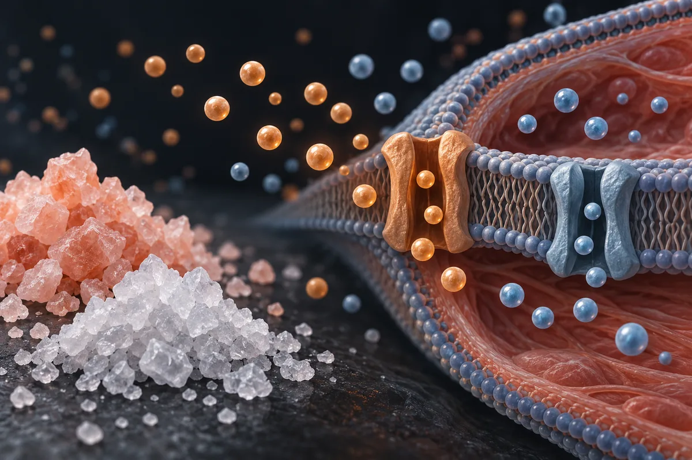

Sal e potássio pré-treino (inclui sal rosa, sal integral e glicerol)
Nenhum estudo mediu "pump" com sal antes do treino de força; o sal rosa precisaria de mais de 30 g por dia para dar potássio que conte, e a pressão sobe com sal em quem treina também.

Material experimental. Leia antes de usar qualquer coisa daqui.
Nada nesta página é recomendação médica, prescrição ou plano de tratamento. É uma tradução organizada de protocolos que circulam em comunidades de pesquisa e, quando existe, do que ensaios publicados testaram. As duas coisas estão marcadas de forma diferente — e não são equivalentes.
A maior parte dos compostos aqui não tem aprovação da ANVISA nem da FDA para uso humano. Vários são vendidos com rótulo de "uso exclusivo em pesquisa", o que significa que não passaram por controle de pureza, esterilidade ou dosagem para consumo por pessoas. Dose descrita por comunidade não é dose validada: é o que alguém relatou ter feito.
Converse com um profissional de saúde habilitado antes de considerar qualquer um destes compostos. Se você já usa algum e sentir algo fora do previsto, procure atendimento — não espere o próximo exame de rotina.
Resumo
Sódio e potássio são essenciais para a contração muscular, mas isso não transforma 1 ou 2 g de sal antes do treino em pré-treino. Não localizei nenhum estudo sobre sal e "pump" no treino de força; num estudo com lutadores, sal antes do exercício intenso não melhorou o desempenho. O que existe é a hiper-hidratação antes de exercício longo no calor, com muito líquido e sódio ou glicerol. A câimbra do exercício parece depender mais de controle neuromuscular do que de falta de sal. O sal rosa tem minerais em quantidade irrisória. Mais de 70% dos adultos brasileiros já passam do limite de sódio, e reduzir sal baixa a pressão em quem tem ou não hipertensão.
Por que esta página existe
O sal aparece descrito em vídeos curtos sobre saúde masculina que vi publicados na internet, como o pré-treino "de 10 centavos" que faria o mesmo que cápsulas caras. A receita varia: 2 g de sal de cozinha antes do treino; 2 g com potássio de banana ou água de coco, na "matriz certa"; 1 g de sal rosa do Himalaia em 300 a 500 mL de água, 30 minutos antes, por 30 dias; ou sal integral com glicerol e quase um litro de água, 60 a 90 minutos antes. As promessas vão de "pump" e veias saltadas a força que "cai pela metade" sem sódio, câimbras que somem, cortisol noturno regulado, pele que "seca" em 72 horas e "hipertrofia sarcoplasmática fixa". A objeção da pressão alta é rebatida com a frase "pra quem treina, é o contrário".
Levantei as alegações de 5 vídeos curtos, separei as 18 que são verificáveis e procurei estudos para cada uma. Nenhum dos vídeos cita estudo. Nenhum número desta página veio da fonte secundária do site.
Este site trata de assunto vizinho também em Glicerol em pó (hiper-hidratação).
O que o sódio e o potássio fazem no músculo
Sódio e potássio são os dois íons que mantêm a excitabilidade da célula muscular. Segundo a revisão de Clausen (2003), cada contração faz o músculo perder potássio e ganhar sódio, o que, se não for revertido, reduz a excitabilidade; a bomba de sódio e potássio restaura esses gradientes, e quando ela é inibida, o músculo perde força e resistência. Essa é a parte verdadeira dos vídeos: a troca de sódio e potássio na membrana é o que permite o impulso elétrico do músculo.
O salto que os vídeos dão é outro: tratar essa fisiologia como se dependesse de uma pitada de sal 30 minutos antes do treino. Quem come normalmente já ingere sódio de sobra. O inquérito nacional de 2008–2009, com 21.003 adultos, achou que 70% ou mais dos homens e das mulheres brasileiros passavam do limite de sódio (Araujo e colegas, 2013). As referências americanas de 2019 fixam a ingestão adequada de sódio em 1.500 mg por dia e recomendam reduzir quando ela passa de 2.300 mg; para o potássio, a ingestão adequada é de 3.400 mg por dia para homens e 2.600 mg para mulheres. Na base americana de composição de alimentos, o sal de cozinha tem 38.800 mg de sódio por 100 g; 2 g de sal levam, portanto, cerca de 780 mg de sódio — conta minha.
Quanta evidência existe, de verdade
Os números abaixo foram levantados por mim em 16 de outubro de 2026, no PubMed e no ClinicalTrials.gov. A consulta de cada linha está ao lado do número, para qualquer pessoa repetir e me contradizer.
| Base | Consulta | Resultado |
|---|---|---|
| PubMed | (sodium[Title/Abstract] OR salt[Title/Abstract]) AND (pre-exercise[Title/Abstract] OR preexercise[Title/Abstract] OR before exercise[Title/Abstract]) AND (ingestion[Title/Abstract] OR loading[Title/Abstract] OR supplementation[Title/Abstract]) | 130 artigos |
| PubMed | (sodium loading[Title/Abstract] OR salt loading[Title/Abstract] OR sodium preloading[Title/Abstract]) AND (exercise[Title/Abstract] OR performance[Title/Abstract]) | 86 artigos |
| PubMed | (sodium[Title/Abstract] OR salt[Title/Abstract]) AND (exercise[Title/Abstract]) AND (plasma volume[Title/Abstract]) AND (Randomized Controlled Trial[Publication Type] OR Clinical Trial[Publication Type]) | 61 artigos |
| PubMed | (salt[Title/Abstract] OR sodium[Title/Abstract]) AND (pump[Title/Abstract] OR muscle swelling[Title/Abstract] OR muscle thickness[Title/Abstract]) AND (resistance exercise[Title/Abstract] OR resistance training[Title/Abstract]) | 0 artigos |
| PubMed | (exercise-associated muscle cramps[Title/Abstract] OR exercise associated muscle cramps[Title/Abstract]) | 50 artigos |
| PubMed | (exercise-associated muscle cramps[Title/Abstract] OR exercise associated muscle cramps[Title/Abstract]) AND (sodium[Title/Abstract] OR electrolyte[Title/Abstract] OR electrolytes[Title/Abstract]) | 28 artigos |
| PubMed | (pink salt[Title/Abstract] OR Himalayan salt[Title/Abstract] OR "Himalayan pink salt"[Title/Abstract]) | 14 artigos |
| PubMed | (glycerol[Title/Abstract]) AND (hyperhydration[Title/Abstract]) | 64 artigos |
| PubMed | (glycerol[Title/Abstract]) AND (hyperhydration[Title/Abstract]) AND (Meta-Analysis[Publication Type] OR Systematic Review[Publication Type]) | 4 artigos |
| PubMed | (salt substitute[Title/Abstract] OR salt substitutes[Title/Abstract]) AND (Randomized Controlled Trial[Publication Type] OR Meta-Analysis[Publication Type]) | 58 artigos |
| ClinicalTrials.gov | intervenção: sodium chloride AND AREA[BasicSearch](exercise OR athletes OR sport) | 857 estudos registrados |
| ClinicalTrials.gov | intervenção: (salt OR sodium chloride OR sodium) AND AREA[BasicSearch](muscle cramp OR cramps) AND AREA[BasicSearch](exercise OR athletes) | 14 estudos registrados |
| ClinicalTrials.gov | intervenção: glycerol AND AREA[BasicSearch](hyperhydration OR exercise OR athletes) | 24 estudos registrados |
| ClinicalTrials.gov | intervenção: salt substitute | 38 estudos registrados |
Leitura honesta desses números
- Sal e "pump" no treino de força: zero artigos. A alegação central dos vídeos não foi estudada.
- O que existe é outra pergunta. Nos 10 primeiros dos 43 artigos em humanos sobre "carga de sódio" que li, aparecem síncope, taquicardia postural, fadiga crônica e dosagem de aldosterona; só um testa sal antes de exercício intenso, o dos lutadores. A hiper-hidratação antes de exercício longo, com sódio ou glicerol, é tema de revisão própria.
- O número do ClinicalTrials.gov engana. Nos 20 primeiros dos 857 registros com cloreto de sódio e exercício, aparecem colágeno, plasma rico em plaquetas, anestesia, hipertensão, fadiga crônica e sal fortificado com ferro — o cloreto de sódio entra como soro ou veículo, e a palavra exercício, como desfecho ou contexto.
- Contagem de artigo mede atenção acadêmica, não evidência de desfecho.
Os estudos que sustentam as alegações
Segundo o PubMed, estes são os trabalhos concretos que tocam no que os vídeos dizem sobre sal, potássio e glicerol. Leia o que cada um mediu, e em quantas pessoas.
| Estudo | N | Contexto | O que relatou | Ressalva |
|---|---|---|---|---|
| Aschenbach et al., 2000 Med Sci Sports Exerc 32(3):669-75 · PMID 10731011 | 8 | Lutadores universitários; 0,21 g/kg de cloreto de sódio, 0,3 g/kg de bicarbonato ou placebo antes de 8 tiros de 15 s em ergômetro de braço | Potência máxima, trabalho total e fadiga iguais nos três casos | Estudo pequeno, mas é o teste direto de sal antes de exercício intenso que localizei |
| Jardine et al., 2023 (revisão sistemática) Sports Med 53(11):2111-2134 · PMID 37490269 | 403 (38 estudos) | Hiper-hidratação antes do exercício, com sódio, glicerol ou outros agentes | Volume plasmático 3,5% a 12,6% maior em 10 estudos; melhora de capacidade em 5 estudos (14,3% a 26,2%); sintomas gastrintestinais relatados em 26 estudos | Sobretudo exercício longo de ritmo constante, muitas vezes no calor; 361 dos 403 participantes eram homens |
| Goulet et al., 2007 (meta-análise) Int J Sport Nutr Exerc Metab 17(4):391-410 · PMID 17962713 | 14 e 4 comparações | Glicerol (1,1 g/kg) com cerca de 24 mL/kg de líquido, contra só líquido | Mais retenção de líquido (+7,7 mL/kg); resistência +2,62% em 4 estudos | Os autores pedem mais dados sobre desempenho |
| Koehler et al., 2013 (meta-análise) Drug Test Anal 5(11-12):896-9 · PMID 24353192 | 54 (5 estudos) | Glicerol e volume plasmático | Volume plasmático 3,3% maior que só com líquido | Os autores registram que o glicerol foi proibido pela WADA a partir de 2010 |
| Schwellnus, 2009 (revisão) Br J Sports Med 43(6):401-8 · PMID 18981039 | — | Causas da câimbra do exercício | A hipótese de falta de eletrólitos e de desidratação vem de casos e de um estudo de 10 pessoas; quatro coortes prospectivas não a sustentam; a alteração do controle neuromuscular é o mecanismo principal | Revisão de um autor |
| Miller et al., 2022 (revisão) J Athl Train 57(1):5-15 · PMID 34185846 | — | Câimbra do exercício: causa, tratamento e prevenção | Causa múltipla; tratamento com alongamento; prevenção individualizada, melhor que conselhos genéricos como "beber mais" | Revisão narrativa baseada em evidência |
| Clausen, 2003 (revisão) Physiol Rev 83(4):1269-324 · PMID 14506306 | — | Bomba de sódio e potássio no músculo | A bomba restaura os gradientes perdidos na contração; inibi-la reduz força e resistência | Fisiologia; não testa sal na dieta |
| Fayet-Moore et al., 2020 Foods 9(10):1490 · PMID 33086585 | 31 amostras | Sal rosa à venda na Austrália contra sal branco iodado | Grande variação de minerais; uma amostra com chumbo acima do limite australiano; seriam precisos mais de 30 g por dia para contribuir de forma relevante com nutrientes | Austrália; não analisou sal à venda no Brasil |
| He et al., 2013 (Cochrane) BMJ 346:f1325 · PMID 23558162 | 3.230 (34 ensaios) | Redução moderada de sal por 4 semanas ou mais | Redução de 4,4 g/dia de sal baixou a pressão em 4,18/2,06 mmHg; em normotensos, 2,42/1,00 mmHg | A queda vale para quem tem e para quem não tem hipertensão |
| Neal et al., 2021 (SSaSS) N Engl J Med 385(12):1067-1077 · PMID 34459569 | 20.995 | Vilarejos da China; substituto de sal (75% cloreto de sódio, 25% cloreto de potássio) contra sal comum, 4,74 anos | AVC (razão 0,86), eventos cardiovasculares (0,87) e morte (0,88) menores; hiperpotassemia grave sem diferença | Participantes com AVC prévio ou 60 anos ou mais com pressão alta |
| Brand et al., 2022 (Cochrane) Cochrane Database Syst Rev 8(8):CD015207 · PMID 35944931 | 34.961 adultos (26 ensaios) | Substitutos de sal com menos sódio | Pressão sistólica −4,76 mmHg; potássio no sangue +0,12 mmol/L | Todos os ensaios excluíram pessoas para quem mais potássio é perigoso, como doentes renais e quem usa remédios que retêm potássio |
Doses usadas em estudos humanos publicados
Isto não é recomendação de dose: é o registro do que foi administrado em estudos publicados, com a finalidade de cada um. Fora do contexto do estudo, esses números não se transferem.
| Estudo | Dose | Duração | Finalidade do estudo |
|---|---|---|---|
| Aschenbach et al., 2000 | 0,21 g/kg de cloreto de sódio, em duas doses 90 e 60 min antes | Dose única | Exercício intenso de braço |
| Goulet et al., 2007 (média dos estudos) | 1,1 g/kg de glicerol com cerca de 24 mL/kg de líquido, medido cerca de 136 min depois | Dose única | Retenção de líquido e resistência |
| Neal et al., 2021 | Substituto de sal com 25% de cloreto de potássio, no uso diário da casa | 4,74 anos em média | AVC e eventos cardiovasculares |
Nenhum estudo que localizei usou 1 ou 2 g de sal antes do treino de força. Para comparar com o glicerol dos estudos: 1,1 g/kg e 24 mL/kg dariam, para um homem de 70 kg, cerca de 77 g de glicerol e 1,7 L de líquido — conta minha.
O sal rosa, o potássio da fruta e a pressão de quem treina
O sal rosa não repõe minerais. O único estudo de composição que localizei analisou 31 amostras de sal rosa à venda na Austrália: os minerais variavam muito, uma amostra tinha chumbo acima do limite australiano, e os autores calcularam que seriam precisos mais de 30 g de sal por dia — cerca de seis colheres de chá — para que os nutrientes contassem, o que daria sódio em excesso (Fayet-Moore e colegas, 2020). Na base americana, o sal de cozinha tem 8 mg de potássio por 100 g. NÃO VERIFIQUEI a composição do sal rosa vendido no Brasil, nem a existência de "sal falsificado pintado de rosa". No Brasil, o sal para consumo humano tem de ter de 15 a 45 mg de iodo por quilo (RDC 604/2022); o texto da norma não traz exceção para sal rosa ou integral.
Banana e água de coco são fontes de potássio, sem mágica de "matriz". Na mesma base americana, a banana crua tem 358 mg de potássio por 100 g, e a água de coco, 250 mg por 100 g. Para chegar perto dos 3.400 mg diários recomendados para homens, isso é comida, não pré-treino. Nenhum estudo que localizei testou "sal com banana" antes do treino.
A pressão de quem treina também responde ao sal. A frase "pra quem treina, é o contrário" não tem estudo que a sustente nos trabalhos que li. A revisão Cochrane de 2013 mostrou queda de pressão com menos sal em quem tem e em quem não tem hipertensão, em homens e mulheres. Trocar parte do sódio por potássio no sal da casa reduziu AVC e morte num ensaio de quase 21 mil pessoas na China. O lado de risco do potássio é real: a revisão Cochrane de 2022 lembra que doentes renais e quem usa remédios que dificultam a eliminação do potássio estão em risco de hiperpotassemia, e todos os 26 ensaios os excluíram.
Das 18 alegações conferidas, duas se confirmam, e nenhuma é sobre "pump"
Cada linha é uma alegação como ela circula, sem o nome de quem a fez. O veredito usa seis rótulos: confirmado, parcialmente, não sustentado, sem estudo em humanos, estudo em animal ou in vitro e número não encontrado na fonte citada.
| O que se diz | O que os estudos mostram | Veredito |
|---|---|---|
| 2 g de sal antes do treino "expandem o pump" e dão "mais volume muscular que qualquer pré-treino de 300 reais" | PubMed: 0 artigos sobre sal e "pump" no treino de força; com lutadores, sal antes do exercício intenso não mudou o desempenho (Aschenbach 2000) | Não sustentado |
| A carga de sódio eleva a osmolaridade e expande o volume de sangue, levando mais nutriente e oxigênio à fibra | Hiper-hidratação com sódio ou glicerol e muito líquido aumentou o volume plasmático (3,5% a 12,6%) e ajudou em exercício longo de ritmo constante (Jardine 2023); "mais nutriente na fibra" não foi medido | Parcialmente |
| O sódio retém o líquido "dentro do miócito" e joga a água para dentro da célula, "não debaixo da pele" | A bomba de sódio e potássio trabalha para tirar da célula o sódio que entra a cada contração (Clausen 2003); não localizei estudo de sal levando água para dentro do músculo | Não sustentado |
| Sódio sem potássio "desregula a bomba", retém líquido "no lugar errado" e é "pior que não fazer nada" | Nenhum estudo localizado | Não sustentado |
| O potássio "arromba a célula" e empurra água e glicogênio para dentro do músculo | Nenhum estudo localizado | Não sustentado |
| A troca rápida de sódio e potássio na membrana gera o impulso elétrico do músculo | É o papel descrito da bomba de sódio e potássio (Clausen 2003) | Confirmado |
| O sódio é "o fio desencapado" entre cérebro e músculo; sem ele, "sua força cai pela metade" | O sódio é essencial à excitação, mas quem come normalmente não fica sem ele; não localizei estudo com queda de força pela metade sem sal antes do treino | Não sustentado |
| O potássio relaxa a fibra e "blinda contra câimbras"; com sal rosa, "as câimbras somem" | A hipótese de falta de eletrólitos na câimbra do exercício não é sustentada por coortes prospectivas; o mecanismo principal parece ser neuromuscular (Schwellnus 2009; Miller 2022) | Não sustentado |
| O sal rosa "tem magnésio e potássio" e repõe o que se perde no suor; o certo é o sal rosa integral, porque há "sal falsificado pintado de rosa" | Seriam precisos mais de 30 g de sal rosa por dia para os minerais contarem (Fayet-Moore 2020); não localizei estudo sobre sal tingido | Não sustentado |
| A bomba de sódio e potássio "puxa glicose e aminoácidos para dentro da fibra", e você "absorve o que come muito mais rápido" | Não localizei estudo de sal antes do treino aumentando a absorção de nutrientes | Não sustentado |
| Do dia 16 ao 30, o sal "neutraliza a acidez do treino", estabiliza o pH, regula o cortisol da noite e dá sono profundo | Nenhum estudo localizado | Não sustentado |
| "Pra quem treina, é o contrário": sal não seria vilão da pressão | Menos sal baixa a pressão em hipertensos e normotensos (He 2013); 70% ou mais dos adultos brasileiros já passam do limite de sódio (Araujo 2013) | Não sustentado |
| Sal puro com água "destrói o estômago"; a "matriz certa" é banana ou água de coco | Banana e água de coco são fontes de potássio (358 e 250 mg por 100 g); "destruir o estômago" e "matriz certa" não foram estudados | Parcialmente |
| 1 g de sal em 300 a 500 mL de água, 30 min antes, por 30 dias; "90% dos caras erram a proporção da água" | Nenhum estudo localizado com esse esquema nem fonte para o "90%"; os estudos de hiper-hidratação usam volumes de líquido muito maiores | Não sustentado |
| O glicerol é um "ímã osmótico" que retém água e aumenta o volume de sangue | Com glicerol, mais retenção de líquido (Goulet 2007) e volume plasmático 3,3% maior que só com líquido (Koehler 2013) | Confirmado |
| Com glicerol, "a água embaixo da pele some" em 72 horas: "você seca no espelho" | O glicerol aumenta a água total do corpo; não localizei estudo de "secagem" da pele | Não sustentado |
| Glicerol com sal: carga "8 vezes mais fácil" e "hipertrofia sarcoplasmática fixa" em 30 dias | Nenhum estudo localizado; os ganhos medidos com glicerol são de resistência, em torno de 2,6% | Não sustentado |
| O glicerol "exige quase 1 litro de água", 60 a 90 min antes, senão "dá diarreia na hora" | Os estudos usaram cerca de 24 mL de líquido por quilo e mediram cerca de 136 min depois; sintomas gastrintestinais foram relatados em 26 dos 38 estudos de hiper-hidratação | Parcialmente |
Placar: 2 confirmadas, 3 parcialmente e 13 não sustentadas.
Segurança: o risco do sal é a pressão, o do potássio é o rim
- Pressão. Somar sal ao dia de quem já passa do limite aumenta a carga de sódio de uma população em que 70% ou mais dos adultos já estão acima dele. Para quem tem pressão alta, a redução de sal baixou a sistólica em 5,39 mmHg na revisão Cochrane de 2013.
- Potássio. O potássio dos alimentos é seguro para quem tem rim saudável. Mas a revisão Cochrane de 2022 aponta risco de hiperpotassemia em quem tem doença renal crônica ou usa remédios que dificultam a eliminação do potássio, e os 26 ensaios de substitutos de sal excluíram essas pessoas. NÃO VERIFIQUEI a lista de remédios em base de interações.
- Glicerol. Nos estudos de hiper-hidratação, sintomas gastrintestinais foram comuns. O glicerol não é constituinte autorizado de suplemento no Brasil.
- Quem não deve usar sem médico: quem tem pressão alta, insuficiência cardíaca ou doença renal; quem usa remédio para pressão ou diurético; quem tem dieta com restrição de sódio ou de potássio — inferência minha a partir dos estudos acima, não de ensaio feito nesses grupos com sal pré-treino.
Status regulatório
- Brasil, sal de cozinha: é alimento. Pela RDC 604/2022, o sal destinado ao consumo humano tem de conter de 15 a 45 mg de iodo por quilo, com iodato de potássio, e o rótulo tem de dizer "Este produto é enriquecido com 15 mg a 45 mg de iodo por quilograma".
- Brasil, suplemento alimentar: as fontes de sódio (cloreto, bicarbonato, citrato e outras) e de potássio (cloreto, citrato e outras) estão no Anexo I da IN 28/2018, mas só para suplementos líquidos de carboidratos e eletrólitos ou de eletrólitos: sódio de 460 a 1.150 mg por litro e potássio de até 700 mg por litro; os de eletrólitos só para crianças a partir de 9 anos e adultos, exceto gestantes e lactantes, com advertência obrigatória no rótulo. Cápsula ou pó de "sal com potássio pré-treino" não cabe nessa autorização. O glicerol não consta como constituinte. Versão consolidada conferida: com alterações até a IN 470, de 16 de setembro de 2026.
- Brasil, medicamento: cloreto de sódio e cloreto de potássio existem em centenas de medicamentos registrados, sobretudo soluções de reposição e de diálise e reidratantes orais (tabela abaixo).
- Estados Unidos: referências de 2019: sódio com ingestão adequada de 1.500 mg/dia e redução recomendada acima de 2.300 mg/dia; potássio com ingestão adequada de 3.400 mg/dia para homens e 2.600 mg para mulheres; limite superior não determinado para nenhum dos dois.
- WADA: sal e potássio não aparecem na Lista Proibida de 2026. O glicerol foi proibido a partir de 2010, segundo Koehler e colegas (2013), e não aparece na Lista de 2026.
No Brasil, busquei no dado aberto de medicamentos registrados da ANVISA, no princípio ativo e no nome do produto, sem acento e sem diferença de caixa.
| Princípio ativo | Padrão buscado | Registros ativos | Classe terapêutica declarada | Produtos |
|---|---|---|---|---|
| cloreto de potássio | cloreto de potassio | 384 | Hemodiálise, reposição hidroeletrolítica e nutrição parenteral, eletrólitos simples, reidratantes orais e parenterais e outras | 60 produtos distintos |
Registro de uma solução de reidratação não torna o sal com banana um pré-treino.
O que este levantamento não fez
- Li resumos, não os artigos inteiros.
- Não localizei estudo para "pump", "força pela metade", "8 vezes mais fácil", "hipertrofia sarcoplasmática fixa", "90% erram a água" e "sal falsificado pintado de rosa". Os vídeos não citam nenhum.
- Não conferi a composição do sal rosa ou do sal integral vendidos no Brasil, nem a fiscalização de iodo nesses produtos.
- Não avaliei interações do potássio com remédios em base de interações.
- Não verifiquei a situação regulatória do glicerol como ingrediente fora do Brasil.
- Não li os estudos individuais das revisões de hiper-hidratação e de câimbra.
Referências
- Aschenbach W, Ocel J, Craft L, et al. Effect of oral sodium loading on high-intensity arm ergometry in college wrestlers. Med Sci Sports Exerc. 2000;32(3):669-75. PMID 10731011 — sal antes do exercício intenso sem ganho de desempenho.
- Jardine WT, Aisbett B, Kelly MK, et al. The Effect of Pre-Exercise Hyperhydration on Exercise Performance, Physiological Outcomes and Gastrointestinal Symptoms: A Systematic Review. Sports Med. 2023;53(11):2111-2134. PMID 37490269 — hiper-hidratação, volume plasmático e sintomas gastrintestinais.
- Goulet ED, Aubertin-Leheudre M, Plante GE, et al. A meta-analysis of the effects of glycerol-induced hyperhydration on fluid retention and endurance performance. Int J Sport Nutr Exerc Metab. 2007;17(4):391-410. PMID 17962713 — glicerol retém líquido; resistência +2,62%.
- Koehler K, Thevis M, Schaenzer W. Meta-analysis: Effects of glycerol administration on plasma volume, haemoglobin, and haematocrit. Drug Test Anal. 2013;5(11-12):896-9. PMID 24353192 — volume plasmático +3,3%; proibição da WADA desde 2010.
- Schwellnus MP. Cause of exercise associated muscle cramps (EAMC)--altered neuromuscular control, dehydration or electrolyte depletion? Br J Sports Med. 2009;43(6):401-8. PMID 18981039 — câimbra do exercício e a hipótese dos eletrólitos.
- Miller KC, McDermott BP, Yeargin SW, et al. An Evidence-Based Review of the Pathophysiology, Treatment, and Prevention of Exercise-Associated Muscle Cramps. J Athl Train. 2022;57(1):5-15. PMID 34185846 — causa múltipla e prevenção individualizada.
- Clausen T. Na+-K+ pump regulation and skeletal muscle contractility. Physiol Rev. 2003;83(4):1269-324. PMID 14506306 — o papel da bomba de sódio e potássio na contração.
- Fayet-Moore F, Wibisono C, Carr P, et al. An Analysis of the Mineral Composition of Pink Salt Available in Australia. Foods. 2020;9(10):1490. PMID 33086585 — minerais irrisórios no sal rosa; uma amostra com chumbo.
- He FJ, Li J, Macgregor GA. Effect of longer term modest salt reduction on blood pressure: Cochrane systematic review and meta-analysis of randomised trials. BMJ. 2013;346:f1325. PMID 23558162 — menos sal, menos pressão, com ou sem hipertensão.
- Neal B, Wu Y, Feng X, et al. Effect of Salt Substitution on Cardiovascular Events and Death. N Engl J Med. 2021;385(12):1067-1077. PMID 34459569 — substituto de sal com potássio reduziu AVC e morte.
- Brand A, Visser ME, Schoonees A, et al. Replacing salt with low-sodium salt substitutes (LSSS) for cardiovascular health in adults, children and pregnant women. Cochrane Database Syst Rev. 2022;8(8):CD015207. PMID 35944931 — benefício na pressão e risco de potássio para doentes renais e usuários de certos remédios.
- Araujo MC, Bezerra IN, Barbosa Fdos S, et al. Macronutrient consumption and inadequate micronutrient intake in adults. Rev Saude Publica. 2013;47 Suppl 1:177S-89S. PMID 23703262 — 70% ou mais dos adultos brasileiros acima do limite de sódio.
- National Academies of Sciences, Engineering, and Medicine. Dietary Reference Intakes for Sodium and Potassium. Washington, DC: National Academies Press; 2019. Resumo. doi:10.17226/25353 — ingestão adequada e nível de redução de risco do sódio; ingestão adequada de potássio.
- FoodData Central, Departamento de Agricultura dos EUA, base SR Legacy — sódio e potássio por 100 g nos registros 173468 (sal de cozinha), 173944 (banana crua) e 170174 (água de coco).
- Resolução RDC nº 604, de 10 de fevereiro de 2022, da ANVISA, no AnvisaLegis — iodação obrigatória do sal para consumo humano, de 15 a 45 mg/kg.
- Instrução Normativa nº 28, de 26 de julho de 2018, da ANVISA, texto consolidado no AnvisaLegis — sódio e potássio só em suplementos líquidos de eletrólitos, com limites por litro; glicerol fora da lista.
- Dado aberto de medicamentos registrados da ANVISA — a mesma base usada na página O que existe no Brasil.
- Lista Proibida da WADA de 2026 (cópia mantida pela Universidade do Esporte de Colônia) — sal, potássio e glicerol não aparecem.
- E-utilities do PubMed (esearch) — a base de todas as contagens de artigo desta página.
- API pública do ClinicalTrials.gov, versão 2 — a base de todas as contagens de estudo desta página.